Q01 · 9.6 / Regulation of Cellular Respiration via Feedback Mechanisms 正式分類
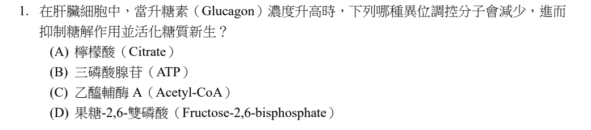
原卷PDF2 · 官方原答案PDF1 · 已核對生物釋疑PDF8–9
官方採計：D 原答案：D
未列於已取得的115年度生物釋疑PDF8–9，依同年度原答案採計
主分類：Ch09 Cellular Respiration and Fermentation
9.6 / Regulation of Cellular Respiration via Feedback Mechanisms
目錄行614；條目起始印刷頁183；實際目錄 PDF37
次分類：Ch41 Animal Nutrition
41.5 / Regulation of Energy Storage
目錄行2743；條目起始印刷頁915；實際目錄 PDF46
主分類理由：核心是以異位效應物調節糖解及糖質新生的代謝流量，採9.6酵素回饋調節最小條目。
次分類理由：41.5補充升糖素促進肝臟釋糖的生理調控，不將激素名稱直接當主分類。
科學說明：D；F2,6BP下降使PFK-1活化減少、FBPase-1抑制解除。Campbell只提供調節框架，分子細節由原始研究補足。
來源涵蓋範圍：Campbell提供分類與核心框架；具名分子、應用細節或措辭校正另由列示來源補足。
教材正文：印刷183／PDF232、印刷184／PDF233、印刷916／PDF965
補充來源：S01
另行比較：一般酵素8.5或激素45
題問糖解及糖質新生相反調控，9.6是更具體代謝條目；S01補足F2,6BP，D相符。
結論：證據確認，分類疑義已解決。完整覆核紀錄
Q02 · 41.5 / Regulation of Energy Storage 正式分類
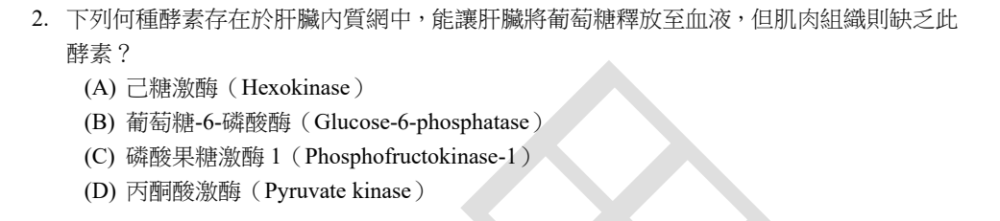
原卷PDF2 · 官方原答案PDF1 · 已核對生物釋疑PDF8–9
官方採計：B 原答案：B
未列於已取得的115年度生物釋疑PDF8–9，依同年度原答案採計
主分類：Ch41 Animal Nutrition
41.5 / Regulation of Energy Storage
目錄行2743；條目起始印刷頁915；實際目錄 PDF46
次分類：Ch06 A Tour of the Cell
6.4 / The Endoplasmic Reticulum: Biosynthetic Factory
目錄行343；條目起始印刷頁104；實際目錄 PDF36
主分類理由：考肝臟能向血液輸出葡萄糖的組織特性；41.5血糖恆定內容位於Regulation of Energy Storage之下，較單限糖解或糖質新生精確。
次分類理由：6.4內質網條目保留題目指定的酵素膜系統位置；不是憑內質網一詞取代血糖功能主軸。
科學說明：B；肝臟G6Pase系統位於ER，催化產生游離葡萄糖。骨骼肌缺乏支撐淨釋糖的肝型系統；勿擴大為所有G6Pase同功型均不存在。
來源涵蓋範圍：Campbell提供分類與核心框架；具名分子、應用細節或措辭校正另由列示來源補足。
教材正文：印刷915／PDF964、印刷916／PDF965、印刷104／PDF153、印刷105／PDF154
補充來源：S02
另行比較：糖解9.2或糖質新生9.6
肝ER與釋糖到血液兩條件需同時保留；41.5主、6.4次涵蓋功能與位置，S02支持B。
結論：證據確認，分類疑義已解決。完整覆核紀錄
Q03 · 10.3 / Linear Electron Flow 正式分類
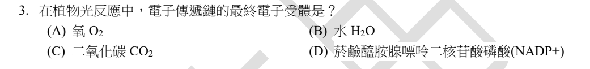
原卷PDF2 · 官方原答案PDF1 · 已核對生物釋疑PDF8–9
官方採計：D 原答案：D
未列於已取得的115年度生物釋疑PDF8–9，依同年度原答案採計
主分類：Ch10 Photosynthesis
10.3 / Linear Electron Flow
目錄行656；條目起始印刷頁197；實際目錄 PDF37
主分類理由：NADP+是線性電子流末端受體；循環電子流不產NADPH，故選Linear Electron Flow。
次分類理由：不增加呼吸電子傳遞章；本題明確限定植物光反應。
科學說明：D；電子經PSI、ferredoxin及NADP+ reductase轉至NADP+形成NADPH。
來源涵蓋範圍：Campbell正文直接支援主要判別原理；題文及官方釋疑差異仍逐題保留。
教材正文：印刷197／PDF246、印刷198／PDF247
補充來源：不需另加課本外具名機制來源
Q04 · 9.6 / Biosynthesis (Anabolic Pathways) 正式分類
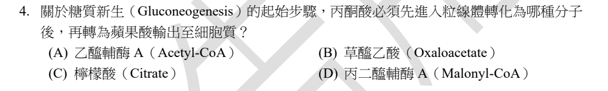
原卷PDF2 · 官方原答案PDF1 · 已核對生物釋疑PDF8–9
官方採計：B 原答案：B
未列於已取得的115年度生物釋疑PDF8–9，依同年度原答案採計
主分類：Ch09 Cellular Respiration and Fermentation
9.6 / Biosynthesis (Anabolic Pathways)
目錄行611；條目起始印刷頁183；實際目錄 PDF37
主分類理由：題目是從丙酮酸合成葡萄糖的同化途徑；Biosynthesis直接提到由pyruvate製造glucose，不能因oxaloacetate而誤列TCA主分類。
次分類理由：粒線體只是反應區室，不另計細胞構造章。
科學說明：B；題目指定的malate輸出路線為pyruvate→oxaloacetate→malate。這是其中一條輸出路線，並非所有糖質新生均必經malate。
來源涵蓋範圍：Campbell提供分類與核心框架；具名分子、應用細節或措辭校正另由列示來源補足。
教材正文：印刷183／PDF232
補充來源：S03
另行比較：檸檬酸循環
題文先限定糖質新生，OAA只是中間物；9.6 Biosynthesis加S03支持指定malate路線，B相符。
結論：證據確認，分類疑義已解決。完整覆核紀錄
Q05 · 6.4 / The Endoplasmic Reticulum: Biosynthetic Factory 正式分類
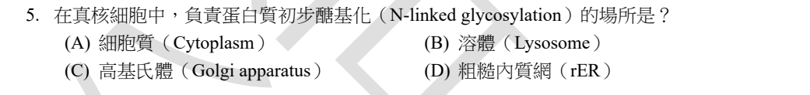
原卷PDF2 · 官方原答案PDF1 · 已核對生物釋疑PDF8–9
官方採計：D 原答案：D
未列於已取得的115年度生物釋疑PDF8–9，依同年度原答案採計
主分類：Ch06 A Tour of the Cell
6.4 / The Endoplasmic Reticulum: Biosynthetic Factory
目錄行343；條目起始印刷頁104；實際目錄 PDF36
主分類理由：粗糙ER參與分泌蛋白的初步醣基化；目錄最小項是The Endoplasmic Reticulum: Biosynthetic Factory，不自造N-linked子目錄。
次分類理由：Golgi為干擾選項及後續修飾場所，不列次分類。
科學說明：D；初步N-linked醣基化在粗糙ER，後續修飾可在Golgi進行。
來源涵蓋範圍：Campbell正文直接支援主要判別原理；題文及官方釋疑差異仍逐題保留。
教材正文：印刷104／PDF153、印刷105／PDF154、印刷106／PDF155
補充來源：不需另加課本外具名機制來源
Q06 · 54.3 / Ecological Succession 正式分類
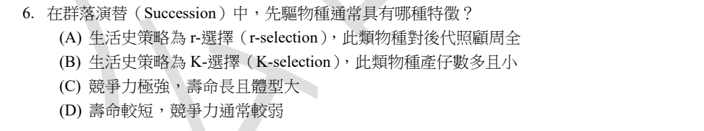
官方採計：A或D 原答案：A
原A，更正為A或D
主分類：Ch54 Community Ecology
54.3 / Ecological Succession
目錄行3633；條目起始印刷頁1229；實際目錄 PDF50
次分類：Ch53 Population Ecology
53.4 / “Trade-offs” and Life Histories
目錄行3564；條目起始印刷頁1201；實際目錄 PDF49
主分類理由：核心是演替初期先驅物種的拓殖特徵，主列Ecological Succession。
次分類理由：53.4生活史取捨支援短壽命、多後代及親代投資的比較。
科學說明：原答案A；官方釋疑第8頁更正A或D，據此採計。A原文附加親代照顧周全與釋疑分析不一致；分類仍明確為演替及生活史，差異已留存而非改寫原題。
來源涵蓋範圍：Campbell正文直接支援主要判別原理；題文及官方釋疑差異仍逐題保留。
教材正文：印刷1229／PDF1278、印刷1230／PDF1279、印刷1201／PDF1250、印刷1202／PDF1251
補充來源：不需另加課本外具名機制來源
另行比較：生活史作主或因A有誤而待審
原圖A含親代照顧周全；官方第8頁仍採A或D。評分依釋疑、科學差異留註；54.3演替主、53.4生活史次已明確。
結論：證據確認，分類疑義已解決。完整覆核紀錄
Q07 · 42.4 / Blood Composition and Function 正式分類
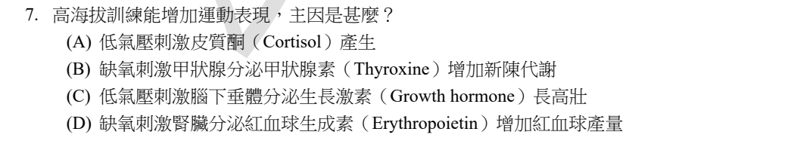
原卷PDF2 · 官方原答案PDF1 · 已核對生物釋疑PDF8–9
官方採計：D 原答案：D
未列於已取得的115年度生物釋疑PDF8–9，依同年度原答案採計
主分類：Ch42 Circulation and Gas Exchange
42.4 / Blood Composition and Function
目錄行2802；條目起始印刷頁934；實際目錄 PDF46
主分類理由：教材在Blood Composition and Function下直接說明低氧→腎臟EPO→紅血球生成，主列42.4。
次分類理由：一般內分泌章不再重複列入；42.4已包含本題整條因果鏈。
科學說明：D；低氧提高腎臟EPO分泌並刺激紅血球生成。
來源涵蓋範圍：Campbell正文直接支援主要判別原理；題文及官方釋疑差異仍逐題保留。
教材正文：印刷934／PDF983、印刷935／PDF984、印刷936／PDF985
補充來源：不需另加課本外具名機制來源
Q08 · 48.4 / Neurotransmitters 正式分類
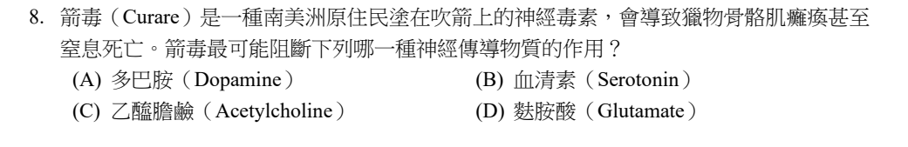
原卷PDF2 · 官方原答案PDF1 · 已核對生物釋疑PDF8–9
官方採計：C 原答案：C
未列於已取得的115年度生物釋疑PDF8–9，依同年度原答案採計
主分類：Ch48 Neurons, Synapses, and Signaling
48.4 / Neurotransmitters
目錄行3231；條目起始印刷頁1080；實際目錄 PDF48
主分類理由：考箭毒阻斷神經肌肉接合處的ACh作用，最小目錄是Neurotransmitters。
次分類理由：骨骼肌癱瘓是突觸阻斷後果，不另列整套肌肉收縮分類。
科學說明：C；curare拮抗神經肌肉接合處的菸鹼型乙醯膽鹼受體。
來源涵蓋範圍：Campbell正文直接支援主要判別原理；題文及官方釋疑差異仍逐題保留。
教材正文：印刷1080／PDF1129、印刷1081／PDF1130
補充來源：不需另加課本外具名機制來源
Q09 · 45.1 / Intercellular Information Flow 正式分類
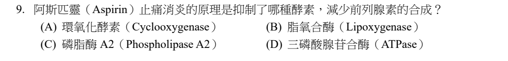
原卷PDF3 · 官方原答案PDF1 · 已核對生物釋疑PDF8–9
官方採計：A 原答案：A
未列於已取得的115年度生物釋疑PDF8–9，依同年度原答案採計
主分類：Ch45 Hormones and the Endocrine System
45.1 / Intercellular Information Flow
目錄行2998；條目起始印刷頁1000；實際目錄 PDF47
主分類理由：前列腺素是旁分泌／自分泌的局部調節物；Intercellular Information Flow正文直接以aspirin阻止其合成為例。
次分類理由：疼痛與發炎是作用結果，不把整個免疫章列為主分類。
科學說明：A；COX催化前列腺素合成途徑，aspirin抑制COX。教材明示抑制前列腺素合成，酵素名稱另有研究證據。
來源涵蓋範圍：Campbell提供分類與核心框架；具名分子、應用細節或措辭校正另由列示來源補足。
教材正文：印刷1000／PDF1049、印刷1001／PDF1050
補充來源：S04
另行比較：免疫發炎43
p1001直接用aspirin說明前列腺素局部訊號；45.1主、S04補COX酵素名稱，A相符。
結論：證據確認，分類疑義已解決。完整覆核紀錄
Q10 · 38.1 / Methods of Pollination 正式分類
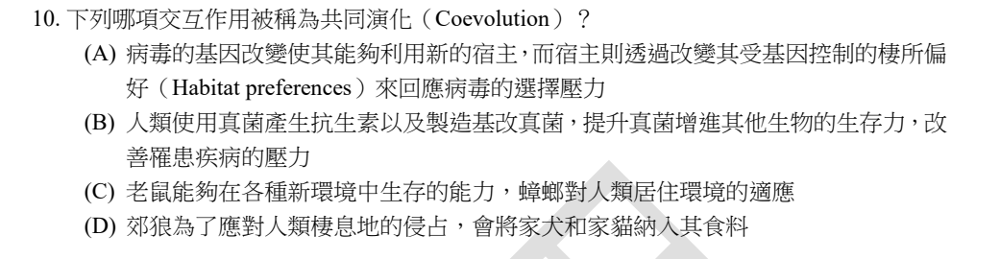
原卷PDF3 · 官方原答案PDF1 · 已核對生物釋疑PDF8–9
官方採計：A 原答案：A
未列於已取得的115年度生物釋疑PDF8–9，依同年度原答案採計
主分類：Ch38 Angiosperm Reproduction and Biotechnology
38.1 / Methods of Pollination
目錄行2483；條目起始印刷頁825；實際目錄 PDF45
次分類：Ch54 Community Ecology
54.1 / Exploitation
目錄行3601；條目起始印刷頁1217；實際目錄 PDF50
主分類理由：Campbell索引將Coevolution指向p825；其相互施加選汰壓力的定義實際位於38.1 Methods of Pollination，故按教材真實位置主列此項。
次分類理由：54.1 Exploitation包含寄生互動，支援本題病毒與宿主情境；不將共同演化自造為Ch54目錄條目。
科學說明：A；病毒與宿主均出現受對方選汰影響的可遺傳變化。B含人為改造，C與D未呈現雙方相互演化。題目未限定植物，主分類代表教材定義位置。
來源涵蓋範圍：Campbell正文直接支援主要判別原理；題文及官方釋疑差異仍逐題保留。
教材正文：印刷825／PDF874、印刷1217／PDF1266、印刷1219／PDF1268
補充來源：不需另加課本外具名機制來源
另行比較：直接放54或自造共同演化節點
實看p825相互選汰定義位於38.1 Methods of Pollination；54.1寄生互動保留次分類。A相符，未把題目改稱植物題。
結論：證據確認，分類疑義已解決。完整覆核紀錄
Q11 · 23.3 / Genetic Drift 正式分類
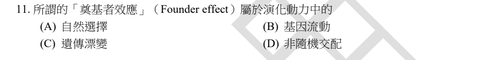
原卷PDF3 · 官方原答案PDF1 · 已核對生物釋疑PDF8–9
官方採計：C 原答案：C
未列於已取得的115年度生物釋疑PDF8–9，依同年度原答案採計
主分類：Ch23 The Evolution of Populations
23.3 / Genetic Drift
目錄行1455；條目起始印刷頁494；實際目錄 PDF41
主分類理由：奠基者效應是少數個體建立族群造成的抽樣漂變，最小條目Genetic Drift已涵蓋。
次分類理由：不是遷移形成基因流，也不需要另列自然選擇。
科學說明：C；小樣本奠基族群的等位基因頻率可因偶然抽樣偏離原族群。
來源涵蓋範圍：Campbell正文直接支援主要判別原理；題文及官方釋疑差異仍逐題保留。
教材正文：印刷494／PDF543、印刷495／PDF544
補充來源：不需另加課本外具名機制來源
Q12 · 12.3 / The Cell Cycle Control System 正式分類
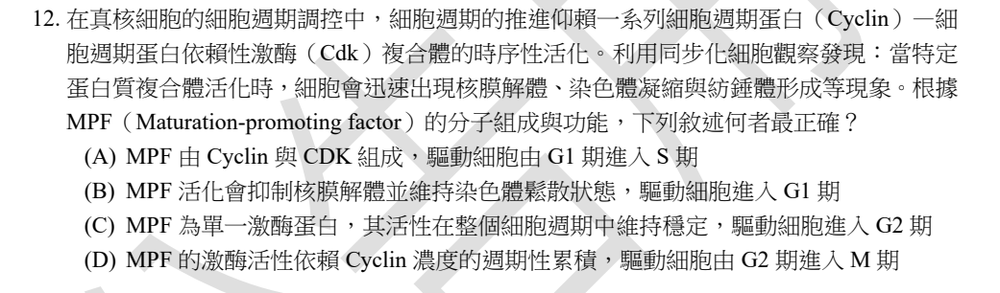
原卷PDF3 · 官方原答案PDF1 · 已核對生物釋疑PDF8–9
官方採計：D 原答案：D
未列於已取得的115年度生物釋疑PDF8–9，依同年度原答案採計
主分類：Ch12 The Cell Cycle
12.3 / The Cell Cycle Control System
目錄行789；條目起始印刷頁244；實際目錄 PDF38
主分類理由：MPF的cyclin–Cdk週期性活化與G2→M控制屬The Cell Cycle Control System。
次分類理由：不另列一般訊號磷酸化章，因題目要求的是特定細胞週期開關。
科學說明：D；MPF依賴cyclin累積而活化，促進染色體凝縮、核膜解體並進入M期。
來源涵蓋範圍：Campbell正文直接支援主要判別原理；題文及官方釋疑差異仍逐題保留。
教材正文：印刷244／PDF293、印刷245／PDF294、印刷246／PDF295
補充來源：不需另加課本外具名機制來源
另行比較：M期過程12.2
問MPF控制而非核膜解體本身，12.3 Cell Cycle Control System及G2進M的D相符。
結論：證據確認，分類疑義已解決。完整覆核紀錄
Q13 · 5.4 / Protein Structure and Function 正式分類
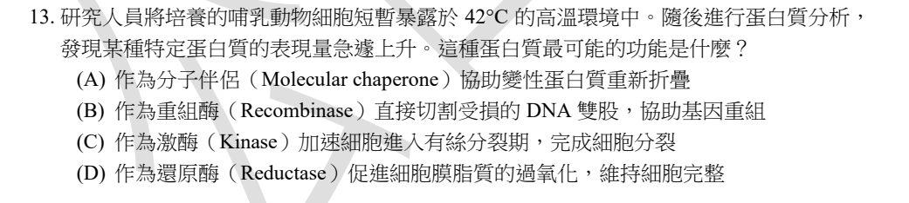
原卷PDF3 · 官方原答案PDF1 · 已核對生物釋疑PDF8–9
官方採計：A 原答案：A
未列於已取得的115年度生物釋疑PDF8–9，依同年度原答案採計
主分類：Ch05 The Structure and Function of Large Biological Molecules
5.4 / Protein Structure and Function
目錄行268；條目起始印刷頁78；實際目錄 PDF36、PDF39
主分類理由：熱致變性及伴侶協助折疊屬蛋白質結構與功能，採5.4 Protein Structure and Function。
次分類理由：不因高溫反應而列動物體溫調節；也不把熱休克伴侶當不存在的目錄條目。
科學說明：A；熱休克伴侶可抑制聚集並協助蛋白重新折疊。教材提供折疊／變性基礎，伴侶的實驗證據另列。
來源涵蓋範圍：Campbell提供分類與核心框架；具名分子、應用細節或措辭校正另由列示來源補足。
教材正文：印刷78／PDF127、印刷81／PDF130、印刷82／PDF131、印刷83／PDF132
補充來源：S05
另行比較：熱休克轉錄18
問蛋白功能，5.4折疊變性提供框架；S05是伴侶促復性的實驗，A相符，不偽稱課本有Hsp專項。
結論：證據確認，分類疑義已解決。完整覆核紀錄
Q14 · 11.1 / Local and Long-Distance Signaling 正式分類
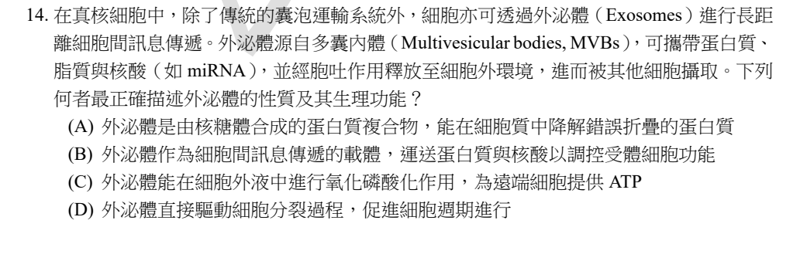
原卷PDF3 · 官方原答案PDF1 · 已核對生物釋疑PDF8–9
官方採計：B 原答案：B
未列於已取得的115年度生物釋疑PDF8–9，依同年度原答案採計
主分類：Ch11 Cell Communication
11.1 / Local and Long-Distance Signaling
目錄行698；條目起始印刷頁215；實際目錄 PDF38
次分類：Ch07 Membrane Structure and Function
7.5 / Exocytosis
目錄行463；條目起始印刷頁139；實際目錄 PDF36
主分類理由：選項辨識外泌體作為細胞間資訊載體的功能，主列Local and Long-Distance Signaling。
次分類理由：7.5 Exocytosis支援題目敘述的囊泡釋放；非以蛋白質降解或能量製造分類。
科學說明：B；外泌體可向受體細胞傳遞功能性RNA等貨物。Campbell未收錄exosome專項，原始研究補足其特例。
來源涵蓋範圍：Campbell提供分類與核心框架；具名分子、應用細節或措辭校正另由列示來源補足。
教材正文：印刷215／PDF264、印刷216／PDF265、印刷139／PDF188
補充來源：S06
Q15 · 50.1 / Types of Sensory Receptors 正式分類
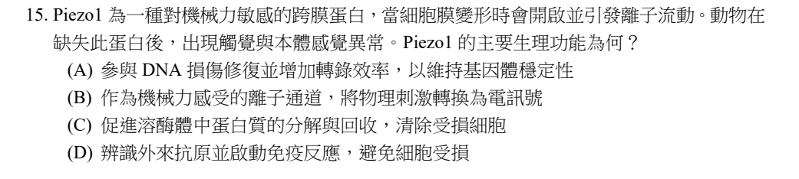
原卷PDF4 · 官方原答案PDF1 · 已核對生物釋疑PDF8–9
官方採計：B 原答案：B
未列於已取得的115年度生物釋疑PDF8–9，依同年度原答案採計
主分類：Ch50 Sensory and Motor Mechanisms
50.1 / Types of Sensory Receptors
目錄行3341；條目起始印刷頁1110；實際目錄 PDF49
主分類理由：物理形變開啟離子通道是機械感受器，對應50.1 Types of Sensory Receptors，並非聽覺器官限定的50.2。
次分類理由：DNA修復、溶體及免疫都是干擾選項，無次分類。
科學說明：B；Piezo1與Piezo2均屬機械活化陽離子通道。觸覺／本體感覺的典型缺失證據主要為Piezo2；原題Piezo1措辭留註，不影響B與機械感受分類。
來源涵蓋範圍：Campbell提供分類與核心框架；具名分子、應用細節或措辭校正另由列示來源補足。
教材正文：印刷1110／PDF1159、印刷1111／PDF1160
補充來源：S07
另行比較：聽覺50.2及Piezo1或2名稱
50.1一般機械轉導最合題；S07區分共通機制與Piezo2典型觸覺證據，保留題文差異但B與分類明確。
結論：證據確認，分類疑義已解決。完整覆核紀錄
Q16 · 45.3 / Parathyroid Hormone and Vitamin D: Control of Blood Calcium 正式分類
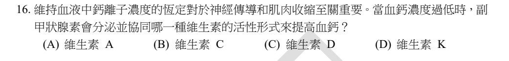
原卷PDF4 · 官方原答案PDF1 · 已核對生物釋疑PDF8–9
官方採計：C 原答案：C
未列於已取得的115年度生物釋疑PDF8–9，依同年度原答案採計
主分類：Ch45 Hormones and the Endocrine System
45.3 / Parathyroid Hormone and Vitamin D: Control of Blood Calcium
目錄行3036；條目起始印刷頁1011；實際目錄 PDF47
主分類理由：PTH與活性維生素D協同維持血鈣，存在完全對應的45.3最小條目。
次分類理由：不另列一般營養維生素或神經肌肉章，這些是背景與下游效應。
科學說明：C；PTH與維生素D活性形式提高血鈣，包含促進腸道鈣吸收等作用。
來源涵蓋範圍：Campbell正文直接支援主要判別原理；題文及官方釋疑差異仍逐題保留。
教材正文：印刷1011／PDF1060、印刷1012／PDF1061
補充來源：不需另加課本外具名機制來源
Q17 · 50.5 / Vertebrate Skeletal Muscle 正式分類
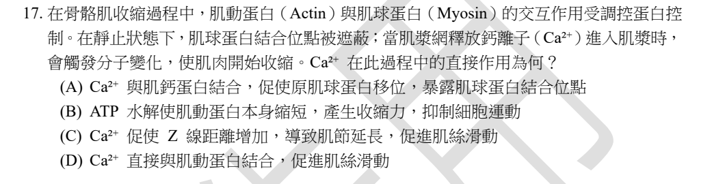
原卷PDF4 · 官方原答案PDF1 · 已核對生物釋疑PDF8–9
官方採計：A 原答案：A
未列於已取得的115年度生物釋疑PDF8–9，依同年度原答案採計
主分類：Ch50 Sensory and Motor Mechanisms
50.5 / Vertebrate Skeletal Muscle
目錄行3381；條目起始印刷頁1126；實際目錄 PDF49
主分類理由：考骨骼肌薄肌絲的Ca2+調節機制，最小目錄Vertebrate Skeletal Muscle。
次分類理由：不另列訊號第二傳訊者；此處為肌鈣蛋白／原肌球蛋白的直接控制。
科學說明：A；Ca2+與troponin結合使tropomyosin移位，暴露myosin結合位。
來源涵蓋範圍：Campbell正文直接支援主要判別原理；題文及官方釋疑差異仍逐題保留。
教材正文：印刷1126／PDF1175、印刷1127／PDF1176、印刷1128／PDF1177、印刷1129／PDF1178
補充來源：不需另加課本外具名機制來源
Q18 · 7.4 / Cotransport: Coupled Transport by a Membrane Protein 正式分類
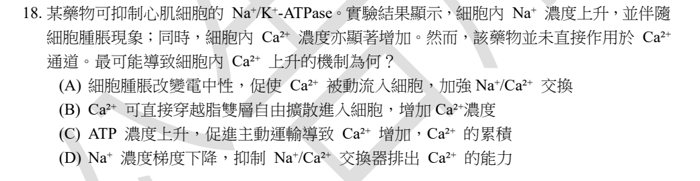
官方採計：D 原答案：D
維持D
主分類：Ch07 Membrane Structure and Function
7.4 / Cotransport: Coupled Transport by a Membrane Protein
目錄行456；條目起始印刷頁138；實際目錄 PDF36
次分類：Ch07 Membrane Structure and Function
7.4 / How Ion Pumps Maintain Membrane Potential
目錄行453；條目起始印刷頁137；實際目錄 PDF36
主分類理由：Na+梯度驅動另一種離子運輸，屬梯度耦合運輸；Cotransport下的原理支援NCX機制。
次分類理由：How Ion Pumps Maintain Membrane Potential支援被抑制的Na+/K+泵。NCX是反向運輸，不能照抄教材蔗糖同向運輸圖。
科學說明：D；官方釋疑第8頁確認Na+梯度下降降低NCX排Ca2+能力；並非直接活化Ca2+通道。
來源涵蓋範圍：Campbell正文直接支援主要判別原理；題文及官方釋疑差異仍逐題保留。
教材正文：印刷137／PDF186、印刷138／PDF187
補充來源：不需另加課本外具名機制來源
另行比較：簡單擴散或NCX同向運輸
官方第8頁明列Na梯度降低使排Ca下降；7.4耦合運輸主、離子泵次。NCX為反向交換，非蔗糖同向圖，D維持。
結論：證據確認，分類疑義已解決。完整覆核紀錄
Q19 · 42.7 / Respiratory Pigments 正式分類
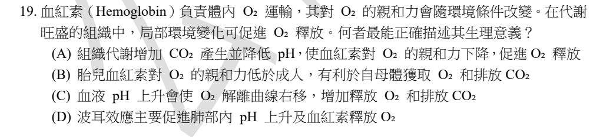
原卷PDF4 · 官方原答案PDF1 · 已核對生物釋疑PDF8–9
官方採計：A 原答案：A
未列於已取得的115年度生物釋疑PDF8–9，依同年度原答案採計
主分類：Ch42 Circulation and Gas Exchange
42.7 / Respiratory Pigments
目錄行2853；條目起始印刷頁947；實際目錄 PDF46
主分類理由：血紅素氧親和力及Bohr效應在Respiratory Pigments直接說明。
次分類理由：pH為調控因素，無須另計一般酸鹼章。
科學說明：A；代謝旺盛處CO2增加、pH下降，使Hb降低O2親和力並釋氧。
來源涵蓋範圍：Campbell正文直接支援主要判別原理；題文及官方釋疑差異仍逐題保留。
教材正文：印刷947／PDF996、印刷948／PDF997、印刷949／PDF998
補充來源：不需另加課本外具名機制來源
Q20 · 9.5 / Types of Fermentation 正式分類
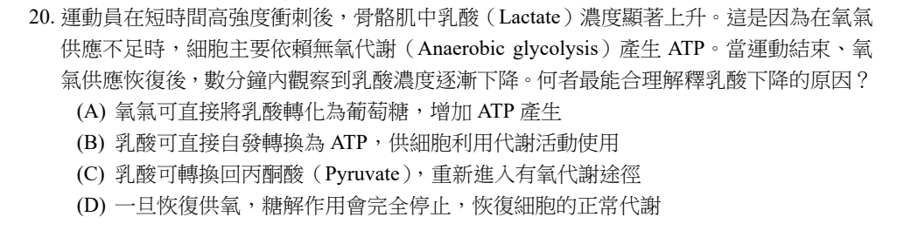
原卷PDF4 · 官方原答案PDF1 · 已核對生物釋疑PDF8–9
官方採計：C 原答案：C
未列於已取得的115年度生物釋疑PDF8–9，依同年度原答案採計
主分類：Ch09 Cellular Respiration and Fermentation
9.5 / Types of Fermentation
目錄行595；條目起始印刷頁180；實際目錄 PDF37
主分類理由：乳酸發酵後的乳酸可回到pyruvate並接回有氧代謝，採Types of Fermentation。
次分類理由：不把供氧恢復誤作停止糖解，也不另列一般肌肉章。
科學說明：C；乳酸轉回丙酮酸後可被氧化；乳酸清除亦有其他去向，本題選項C正確且不宣稱唯一途徑。
來源涵蓋範圍：Campbell正文直接支援主要判別原理；題文及官方釋疑差異仍逐題保留。
教材正文：印刷180／PDF229、印刷181／PDF230
補充來源：不需另加課本外具名機制來源
Q21 · 7.3 / Passive transport is diffusion of a substance across a membrane with no energy investment 正式分類
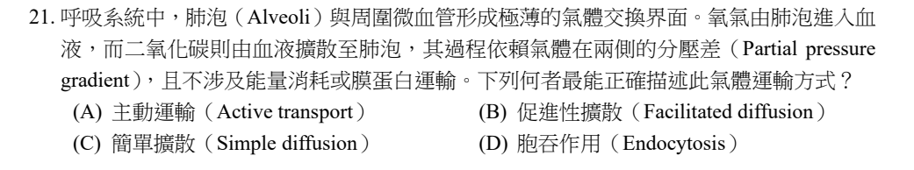
原卷PDF5 · 官方原答案PDF1 · 已核對生物釋疑PDF8–9
官方採計：C 原答案：C
未列於已取得的115年度生物釋疑PDF8–9，依同年度原答案採計
主分類：Ch07 Membrane Structure and Function
7.3 / Passive transport is diffusion of a substance across a membrane with no energy investment
目錄行436；條目起始印刷頁132；實際目錄 PDF36
次分類：Ch42 Circulation and Gas Exchange
42.5 / Partial Pressure Gradients in Gas Exchange
目錄行2812；條目起始印刷頁939；實際目錄 PDF46
主分類理由：題目要求辨識不耗能、不用運輸蛋白的擴散方式，主列7.3概念本身的直接擴散段落。其兩個子條目只談滲透或促進性擴散，不能硬套。
次分類理由：42.5 Partial Pressure Gradients in Gas Exchange支援肺泡／血液氣體分壓的特定驅動力。
科學說明：C；O2與CO2沿分壓差簡單擴散，無需泵或運輸蛋白。
來源涵蓋範圍：Campbell正文直接支援主要判別原理；題文及官方釋疑差異仍逐題保留。
教材正文：印刷132／PDF181、印刷133／PDF182、印刷939／PDF988
補充來源：不需另加課本外具名機制來源
另行比較：7.3促進性擴散子條目
題文明示不用膜蛋白，該子條目不適合；7.3概念正文是最小實際容納位置，42.5補分壓，C相符。
結論：證據確認，分類疑義已解決。完整覆核紀錄
Q22 · 7.1 / The Fluidity of Membranes 正式分類
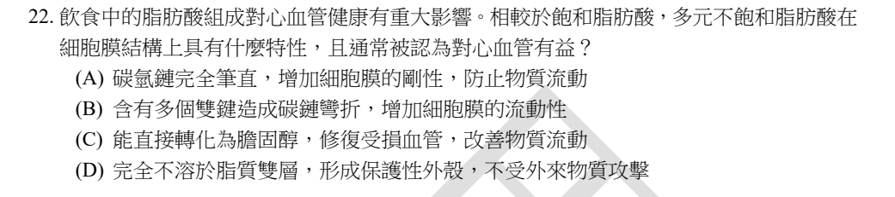
原卷PDF5 · 官方原答案PDF1 · 已核對生物釋疑PDF8–9
官方採計：B 原答案：B
未列於已取得的115年度生物釋疑PDF8–9，依同年度原答案採計
主分類：Ch07 Membrane Structure and Function
7.1 / The Fluidity of Membranes
目錄行411；條目起始印刷頁128；實際目錄 PDF36
主分類理由：cis不飽和脂肪酸碳鏈彎折減少緊密堆積，直接對應The Fluidity of Membranes。
次分類理由：心血管健康是題幹情境，不增加循環疾病分類。
科學說明：B；以天然cis不飽和脂肪酸為背景，多個雙鍵造成彎折並提高膜流動性；不泛稱所有雙鍵含trans都造成同等彎折。
來源涵蓋範圍：Campbell正文直接支援主要判別原理；題文及官方釋疑差異仍逐題保留。
教材正文：印刷128／PDF177、印刷129／PDF178
補充來源：不需另加課本外具名機制來源
Q23 · 16.2 / Replicating the Ends of DNA Molecules 正式分類
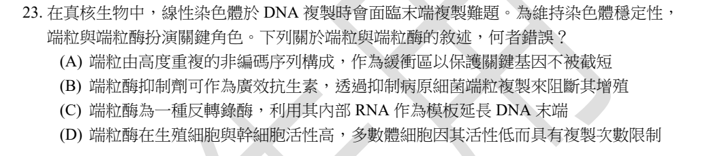
原卷PDF5 · 官方原答案PDF1 · 已核對生物釋疑PDF8–9
官方採計：B 原答案：B
未列於已取得的115年度生物釋疑PDF8–9，依同年度原答案採計
主分類：Ch16 The Molecular Basis of Inheritance
16.2 / Replicating the Ends of DNA Molecules
目錄行1019；條目起始印刷頁328；實際目錄 PDF39
主分類理由：末端複製難題、端粒及端粒酶均在Replicating the Ends of DNA Molecules。
次分類理由：細菌是錯誤選項用來區辨的對象，不新增微生物章。
科學說明：B是錯誤敘述；一般細菌沒有真核式端粒／端粒酶系統，不能作廣效抗生素的一般靶點。
來源涵蓋範圍：Campbell正文直接支援主要判別原理；題文及官方釋疑差異仍逐題保留。
教材正文：印刷328／PDF377、印刷329／PDF378、印刷330／PDF379
補充來源：不需另加課本外具名機制來源
Q24 · 45.1 / Cellular Hormone Response Pathways 正式分類
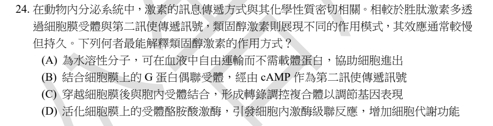
原卷PDF5 · 官方原答案PDF1 · 已核對生物釋疑PDF8–9
官方採計：C 原答案：C
未列於已取得的115年度生物釋疑PDF8–9，依同年度原答案採計
主分類：Ch45 Hormones and the Endocrine System
45.1 / Cellular Hormone Response Pathways
目錄行3004；條目起始印刷頁1002；實際目錄 PDF47
次分類：Ch11 Cell Communication
11.2 / Intracellular Receptors
目錄行711；條目起始印刷頁220；實際目錄 PDF38
主分類理由：類固醇激素的脂溶性、胞內受體及轉錄反應，直接對應Cellular Hormone Response Pathways。
次分類理由：11.2 Intracellular Receptors提供激素—受體複合體作轉錄調節者的分子機制。
科學說明：C；典型類固醇訊號穿膜結合胞內受體並改變基因表現；本題考經典路徑而非所有非基因體例外。
來源涵蓋範圍：Campbell正文直接支援主要判別原理；題文及官方釋疑差異仍逐題保留。
教材正文：印刷1002／PDF1051、印刷1003／PDF1052、印刷220／PDF269
補充來源：不需另加課本外具名機制來源
Q25 · 43.3 / Immunization 正式分類
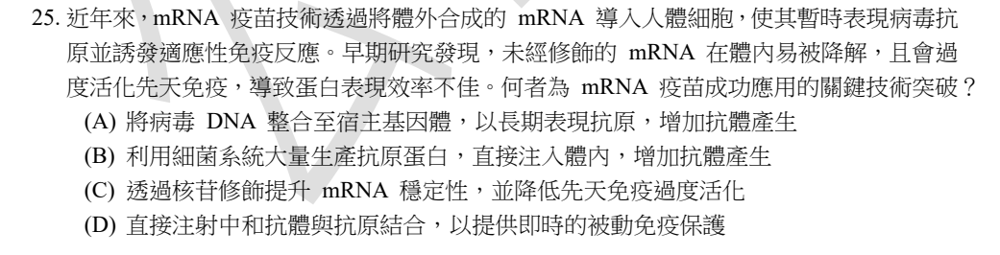
原卷PDF5 · 官方原答案PDF1 · 已核對生物釋疑PDF8–9
官方採計：C 原答案：C
未列於已取得的115年度生物釋疑PDF8–9，依同年度原答案採計
主分類：Ch43 The Immune System
43.3 / Immunization
目錄行2908；條目起始印刷頁968；實際目錄 PDF47
次分類：Ch43 The Immune System
43.1 / Innate Immunity of Vertebrates
目錄行2870；條目起始印刷頁954；實際目錄 PDF47
主分類理由：題目以mRNA免疫接種技術為核心，主列Immunization；目錄沒有mRNA疫苗或核苷修飾專項。
次分類理由：43.1 Innate Immunity of Vertebrates支持未修飾RNA活化先天辨識的問題，研究補足修飾技術。
科學說明：C；核苷修飾降低不必要的先天免疫活化並改善蛋白表現；不是DNA整合或注射抗體。
來源涵蓋範圍：Campbell提供分類與核心框架；具名分子、應用細節或措辭校正另由列示來源補足。
教材正文：印刷968／PDF1017、印刷954／PDF1003、印刷955／PDF1004
補充來源：S08
另行比較：只列RNA化學5
用途是免疫接種且限制來自先天辨識；43.3主與43.1次，S08提供修飾改善表現及穩定的實驗，C相符。
結論：證據確認，分類疑義已解決。完整覆核紀錄
Q26 · 14.3 / Extending Mendelian Genetics for Two or More Genes 正式分類
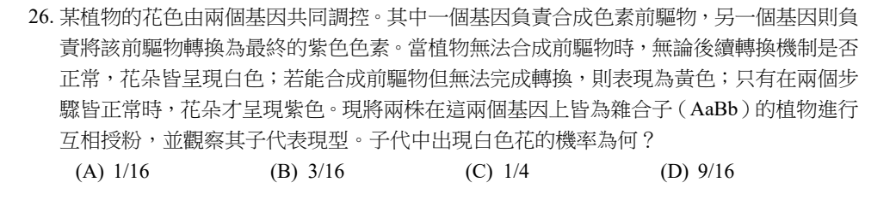
原卷PDF5 · 官方原答案PDF1 · 已核對生物釋疑PDF8–9
官方採計：C 原答案：C
未列於已取得的115年度生物釋疑PDF8–9，依同年度原答案採計
主分類：Ch14 Mendel and the Gene Idea
14.3 / Extending Mendelian Genetics for Two or More Genes
目錄行895；條目起始印刷頁281；實際目錄 PDF38
主分類理由：兩個基因依序作用造成隱性上位性，屬Extending Mendelian Genetics for Two or More Genes。
次分類理由：不因花色而列植物生殖，題目核心為遺傳機率。
科學說明：C；缺乏前驅物的aa佔1/4，不論B位點為何皆白色。依題意功能性顯性等位基因假設，分布為9紫:3黃:4白。
來源涵蓋範圍：Campbell正文直接支援主要判別原理；題文及官方釋疑差異仍逐題保留。
教材正文：印刷281／PDF330、印刷282／PDF331
補充來源：不需另加課本外具名機制來源
Q27 · 39.3 / Biological Clocks and Circadian Rhythms 正式分類
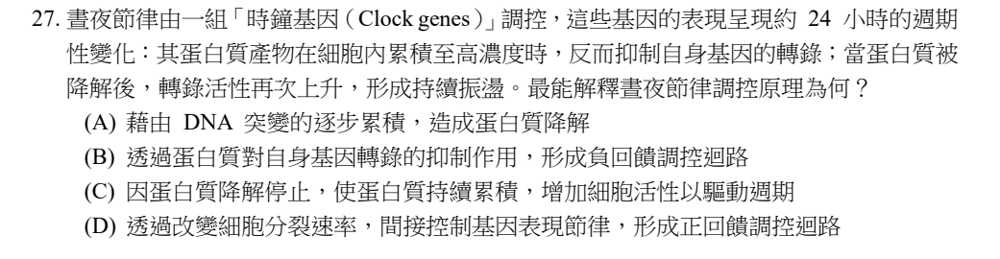
原卷PDF6 · 官方原答案PDF1 · 已核對生物釋疑PDF8–9
官方採計：B 原答案：B
未列於已取得的115年度生物釋疑PDF8–9，依同年度原答案採計
主分類：Ch39 Plant Responses to Internal and External Signals
39.3 / Biological Clocks and Circadian Rhythms
目錄行2570；條目起始印刷頁857；實際目錄 PDF45
次分類：Ch18 Regulation of Gene Expression
18.2 / Regulation of Transcription Initiation
目錄行1126；條目起始印刷頁373；實際目錄 PDF39
主分類理由：p858直接描述clock genes轉錄負回饋與延遲造成振盪，屬Biological Clocks and Circadian Rhythms，較49.2中樞時鐘同步更貼題。
次分類理由：18.2 Regulation of Transcription Initiation補充轉錄因子抑制自身基因的調控層次；題目未指定生物種類。
科學說明：B；蛋白質累積後抑制自身轉錄、降解後解除抑制，延遲的負回饋形成振盪。Ch39是教材敘述位置，不表示原題限定植物。
來源涵蓋範圍：Campbell正文直接支援主要判別原理；題文及官方釋疑差異仍逐題保留。
教材正文：印刷857／PDF906、印刷858／PDF907、印刷373／PDF422、印刷374／PDF423
補充來源：不需另加課本外具名機制來源
另行比較：49.2中央時鐘
實看p858有clock基因自身轉錄負回饋與延遲；39.3直接支持，不強加題目沒有的SCN；18.2次，B相符。
結論：證據確認，分類疑義已解決。完整覆核紀錄
Q28 · 48.4 / Generation of Postsynaptic Potentials 正式分類
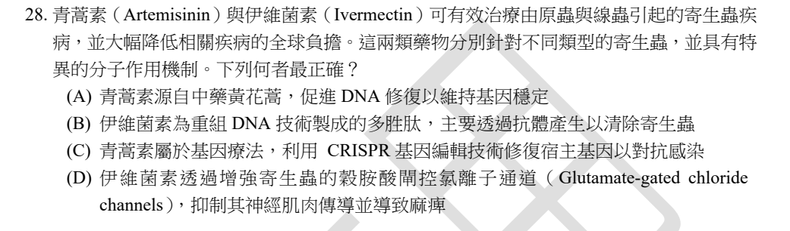
原卷PDF6 · 官方原答案PDF1 · 已核對生物釋疑PDF8–9
官方採計：D 原答案：D
未列於已取得的115年度生物釋疑PDF8–9，依同年度原答案採計
主分類：Ch48 Neurons, Synapses, and Signaling
48.4 / Generation of Postsynaptic Potentials
目錄行3219；條目起始印刷頁1078；實際目錄 PDF48
主分類理由：決定正確選項的是配體閘控Cl−電導增加所致的抑制性突觸效應，主列Generation of Postsynaptic Potentials。
次分類理由：寄生線蟲及青蒿素是情境／干擾選項，不直接據此歸入動物分類章。
科學說明：D；伊維菌素可結合並促進無脊椎GluCl開啟。不可把Campbell哺乳動物glutamate常為興奮性的例子直接移植至此Cl−通道。
來源涵蓋範圍：Campbell提供分類與核心框架；具名分子、應用細節或措辭校正另由列示來源補足。
教材正文：印刷1078／PDF1127、印刷1079／PDF1128
補充來源：S09
另行比較：寄生蟲動物分類33
D的判別在Cl通道與抑制性電位，48.4為主；S09無脊椎GluCl避免誤套哺乳類glutamate例子。
結論：證據確認，分類疑義已解決。完整覆核紀錄
Q29 · 6.5 / Peroxisomes: Oxidation 正式分類
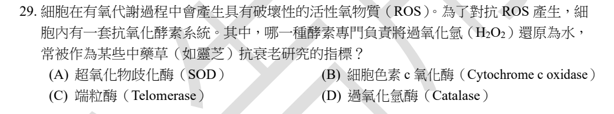
原卷PDF6 · 官方原答案PDF1 · 已核對生物釋疑PDF8–9
官方採計：D 原答案：D
未列於已取得的115年度生物釋疑PDF8–9，依同年度原答案採計
主分類：Ch06 A Tour of the Cell
6.5 / Peroxisomes: Oxidation
目錄行371；條目起始印刷頁112；實際目錄 PDF36
主分類理由：教材於Peroxisomes: Oxidation直接說明將有毒H2O2轉成水的酵素，最小條目可定位其解毒反應。
次分類理由：藥草抗衰老僅作研究指標情境，不另列植物或端粒。
科學說明：D；catalase總反應為2H2O2→2H2O+O2，兼有氧化與還原。原題僅寫還原為水屬簡化，SOD處理的是superoxide。
來源涵蓋範圍：Campbell提供分類與核心框架；具名分子、應用細節或措辭校正另由列示來源補足。
教材正文：印刷112／PDF161
補充來源：S10
另行比較：把還原水當完整總反應
6.5過氧化體有H2O2解毒；S10確證2H2O2變2H2O和O2，D相符並保留題文簡化註記。
結論：證據確認，分類疑義已解決。完整覆核紀錄
Q30 · 18.1 / Positive Gene Regulation 正式分類
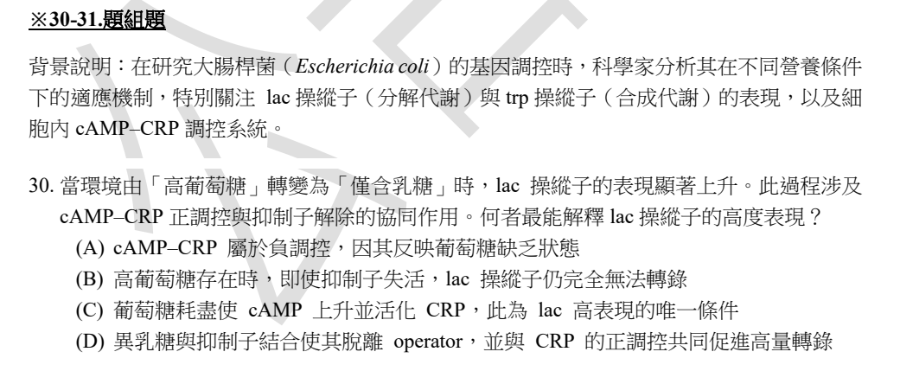
原卷PDF6 · 官方原答案PDF1 · 已核對生物釋疑PDF8–9
官方採計：D 原答案：D
未列於已取得的115年度生物釋疑PDF8–9，依同年度原答案採計
主分類：Ch18 Regulation of Gene Expression
18.1 / Positive Gene Regulation
目錄行1113；條目起始印刷頁369；實際目錄 PDF39
次分類：Ch18 Regulation of Gene Expression
18.1 / Repressible and Inducible Operons: Two Types of Negative Gene Regulation
目錄行1110；條目起始印刷頁368；實際目錄 PDF39
主分類理由：題目要求lac高表現的CAP/CRP正調控與乳糖解除抑制協同，主列Positive Gene Regulation。
次分類理由：Repressible and Inducible Operons保留allolactose使抑制子離開operator的必要條件。
科學說明：D；葡萄糖低→cAMP–CRP活化，加上allolactose解除lac抑制，才有高量轉錄。
來源涵蓋範圍：Campbell正文直接支援主要判別原理；題文及官方釋疑差異仍逐題保留。
教材正文：印刷368／PDF417、印刷369／PDF418、印刷370／PDF419
補充來源：不需另加課本外具名機制來源
另行比較：只計乳糖解除抑制
裁圖含共用背景；高量lac需要CRP正調控及解除抑制，18.1正調控主、可誘導操縱子次，D相符。
結論：證據確認，分類疑義已解決。完整覆核紀錄
Q31 · 18.1 / Positive Gene Regulation 正式分類
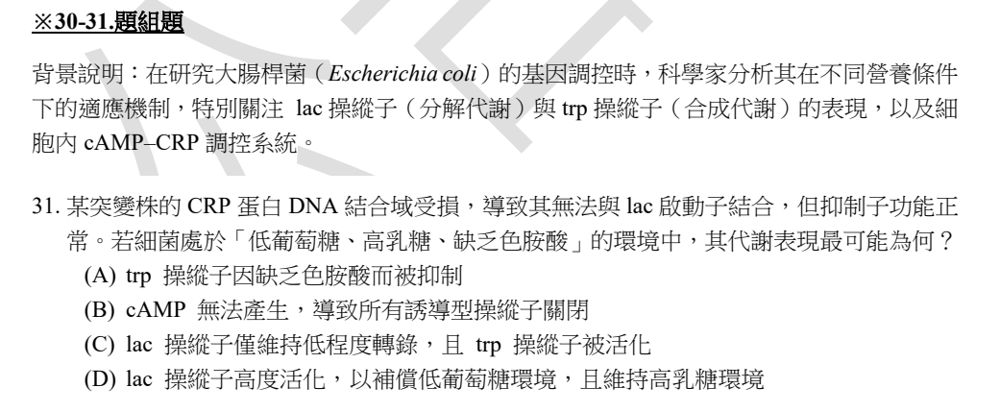
原卷PDF6 · 官方原答案PDF1 · 已核對生物釋疑PDF8–9
官方採計：C 原答案：C
未列於已取得的115年度生物釋疑PDF8–9，依同年度原答案採計
主分類：Ch18 Regulation of Gene Expression
18.1 / Positive Gene Regulation
目錄行1113；條目起始印刷頁369；實際目錄 PDF39
次分類：Ch18 Regulation of Gene Expression
18.1 / Repressible and Inducible Operons: Two Types of Negative Gene Regulation
目錄行1110；條目起始印刷頁368；實際目錄 PDF39
主分類理由：CRP不能結合DNA直接造成lac缺乏正調控，主列Positive Gene Regulation。
次分類理由：trp在缺乏色胺酸時解除可抑制型操縱子抑制，需共同引用負調控條目。
科學說明：C；lac只有低量轉錄，trp因缺少共抑制物而活化。題幹的CRP結合啟動子採鄰近調控區理解，不與RNA聚合酶的核心啟動子位混同。
來源涵蓋範圍：Campbell正文直接支援主要判別原理；題文及官方釋疑差異仍逐題保留。
教材正文：印刷368／PDF417、印刷369／PDF418、印刷370／PDF419
補充來源：不需另加課本外具名機制來源
另行比較：CRP壞了等於全部操縱子關閉
裁圖含共用背景；失去CRP使lac低表現，缺trp使trp解除抑制，C相符，正負調控兩條目均保留。
結論：證據確認，分類疑義已解決。完整覆核紀錄
Q32 · 12.3 / Loss of Cell Cycle Controls in Cancer Cells 正式分類
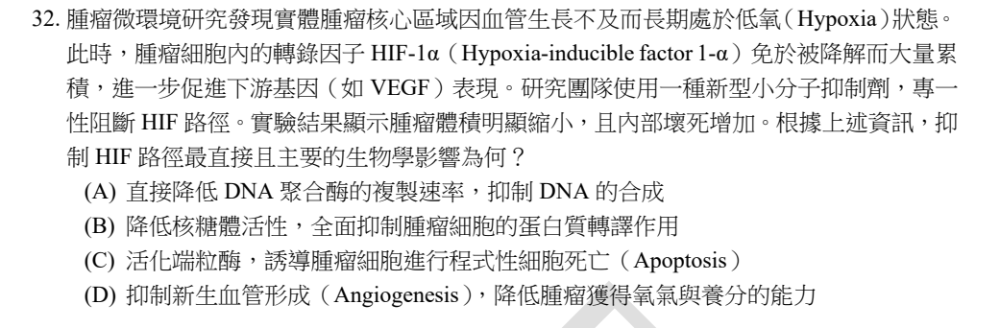
原卷PDF7 · 官方原答案PDF1 · 已核對生物釋疑PDF8–9
官方採計：D 原答案：D
未列於已取得的115年度生物釋疑PDF8–9，依同年度原答案採計
主分類：Ch12 The Cell Cycle
12.3 / Loss of Cell Cycle Controls in Cancer Cells
目錄行792；條目起始印刷頁248；實際目錄 PDF38
次分類：Ch18 Regulation of Gene Expression
18.2 / Regulation of Transcription Initiation
目錄行1126；條目起始印刷頁373；實際目錄 PDF39
主分類理由：問題問阻斷HIF後腫瘤供氧與生長受限；Loss of Cell Cycle Controls in Cancer Cells的p249正文敘述腫瘤可刺激血管生長以取得營養。
次分類理由：18.2轉錄起始調控支援HIF驅動VEGF表現；HIF分子細節由原始研究補足。
科學說明：D；抑制HIF降低VEGF及血管新生，腫瘤氧與營養供應下降。不是直接阻斷DNA聚合酶或活化端粒酶。
來源涵蓋範圍：Campbell提供分類與核心框架；具名分子、應用細節或措辭校正另由列示來源補足。
教材正文：印刷248／PDF297、印刷249／PDF298、印刷373／PDF422、印刷374／PDF423
補充來源：S11
另行比較：只列一般轉錄因子
問腫瘤縮小的直接生理原因，p249正文血管供養支持12.3；18.2加S11補HIF→VEGF鏈，D相符。
結論：證據確認，分類疑義已解決。完整覆核紀錄
Q33 · 6.4 / Lysosomes: Digestive Compartments 正式分類
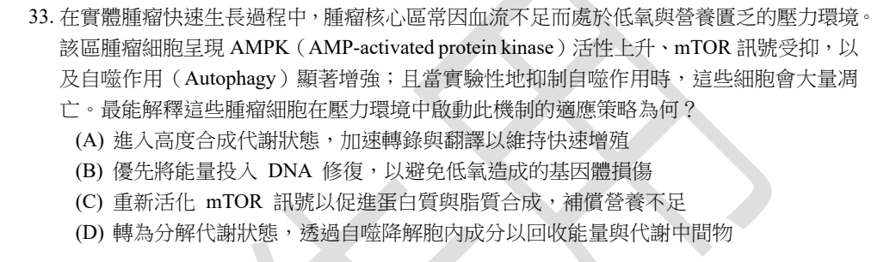
原卷PDF7 · 官方原答案PDF1 · 已核對生物釋疑PDF8–9
官方採計：D 原答案：D
未列於已取得的115年度生物釋疑PDF8–9，依同年度原答案採計
主分類：Ch06 A Tour of the Cell
6.4 / Lysosomes: Digestive Compartments
目錄行349；條目起始印刷頁107；實際目錄 PDF36
次分類：Ch08 An Introduction to Metabolism
8.1 / Metabolic Pathways
目錄行478；條目起始印刷頁144；實際目錄 PDF37
主分類理由：自噬以溶體降解自身胞內物並回收成分，最小目錄Lysosomes: Digestive Compartments。
次分類理由：8.1 Metabolic Pathways支援分解代謝提供可再用中間物的能量方向，非高合成代謝。
科學說明：D；營養缺乏時自噬可支援存活；AMPK/mTOR題幹是上游訊號，不能取代本題實際問的降解回收策略。
來源涵蓋範圍：Campbell提供分類與核心框架；具名分子、應用細節或措辭校正另由列示來源補足。
教材正文：印刷107／PDF156、印刷108／PDF157、印刷144／PDF193
補充來源：S12
另行比較：高合成代謝或自噬等於凋亡
p107–108自噬回收支持溶體，8.1分解代謝次；S12驗證AMPK/mTOR方向，抑制自噬致死亡符合D。
結論：證據確認，分類疑義已解決。完整覆核紀錄
Q34 · 43.3 / Helper T Cells: Activating Adaptive Immunity 正式分類
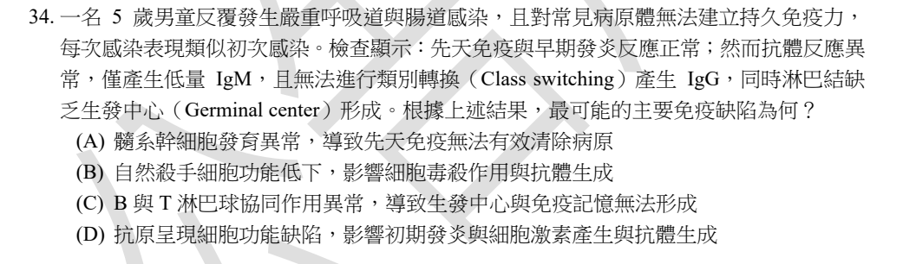
原卷PDF7 · 官方原答案PDF1 · 已核對生物釋疑PDF8–9
官方採計：C 原答案：C
未列於已取得的115年度生物釋疑PDF8–9，依同年度原答案採計
主分類：Ch43 The Immune System
43.3 / Helper T Cells: Activating Adaptive Immunity
目錄行2896；條目起始印刷頁963；實際目錄 PDF47
次分類：Ch43 The Immune System
43.2 / B Cell and T Cell Development
目錄行2889；條目起始印刷頁960；實際目錄 PDF47
主分類理由：B與T協同失敗屬Helper T Cells: Activating Adaptive Immunity，較泛列免疫缺陷更具機制特異性。
次分類理由：B Cell and T Cell Development補充克隆擴增及免疫記憶；類別轉換／生發中心細節由原始研究補足。
科學說明：C；輔助T與B互動對生發中心、抗體類別轉換和持久記憶必要，與題示先天反應正常相符。
來源涵蓋範圍：Campbell提供分類與核心框架；具名分子、應用細節或措辭校正另由列示來源補足。
教材正文：印刷960／PDF1009、印刷961／PDF1010、印刷962／PDF1011、印刷963／PDF1012、印刷964／PDF1013
補充來源：S13
另行比較：泛列免疫缺陷43.4
先天正常但類別轉換及生發中心失敗指T/B協同，43.3 helper T主、43.2發育記憶次，S13支持C。
結論：證據確認，分類疑義已解決。完整覆核紀錄
Q35 · 43.4 / Cancer and Immunity 正式分類
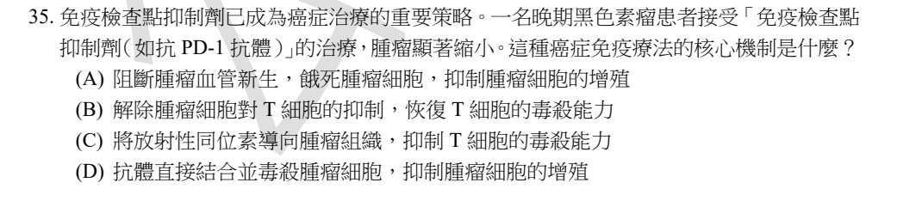
原卷PDF7 · 官方原答案PDF1 · 已核對生物釋疑PDF8–9
官方採計：B 原答案：B
未列於已取得的115年度生物釋疑PDF8–9，依同年度原答案採計
主分類：Ch43 The Immune System
43.4 / Cancer and Immunity
目錄行2930；條目起始印刷頁974；實際目錄 PDF47
主分類理由：核心是免疫系統對癌細胞的防禦，故採Cancer and Immunity。該頁正文以病毒相關癌症為例，未講解PD-1檢查點治療；治療的分子機制須由原始研究補足。
次分類理由：受體作用是治療入口；本題問恢復免疫毒殺，無需另列訊號章。
科學說明：B；檢查點抑制療法解除抑制，恢復T細胞對腫瘤的攻擊，而非抗體直接毒殺。
來源涵蓋範圍：Campbell提供分類與核心框架；具名分子、應用細節或措辭校正另由列示來源補足。
教材正文：印刷974／PDF1023、印刷975／PDF1024
補充來源：S15
另行比較：PD-1細節誤稱課本直接涵蓋
p974為病毒相關癌症免疫，p975為章摘要，沒有PD-1治療細節；修正首輪理由補S15，43.4 Cancer and Immunity框架與B維持。
結論：證據確認，分類疑義已解決。完整覆核紀錄
Q36 · 11.2 / Receptors in the Plasma Membrane 正式分類
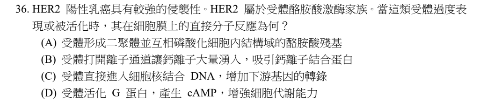
原卷PDF7 · 官方原答案PDF1 · 已核對生物釋疑PDF8–9
官方採計：A 原答案：A
未列於已取得的115年度生物釋疑PDF8–9，依同年度原答案採計
主分類：Ch11 Cell Communication
11.2 / Receptors in the Plasma Membrane
目錄行708；條目起始印刷頁217；實際目錄 PDF38
主分類理由：HER2被明示屬RTK，核心是二聚體與相互磷酸化，目錄最小項Receptors in the Plasma Membrane。
次分類理由：乳癌僅是RTK過度活化的情境，不將癌症章列主分類。
科學說明：A；RTK二聚化並交互磷酸化胞內酪胺酸，提供下游訊號蛋白結合位置。
來源涵蓋範圍：Campbell正文直接支援主要判別原理；題文及官方釋疑差異仍逐題保留。
教材正文：印刷217／PDF266、印刷218／PDF267、印刷219／PDF268
補充來源：不需另加課本外具名機制來源
Q37 · 43.1 / Innate Immunity of Vertebrates 正式分類
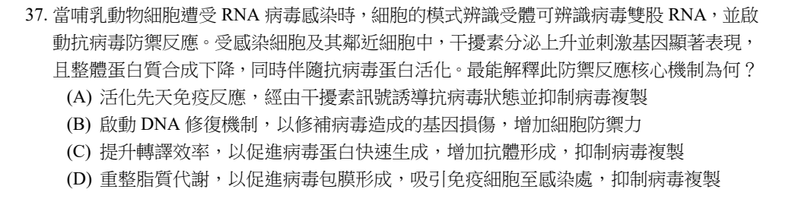
原卷PDF8 · 官方原答案PDF1 · 已核對生物釋疑PDF8–9
官方採計：A 原答案：A
未列於已取得的115年度生物釋疑PDF8–9，依同年度原答案採計
主分類：Ch43 The Immune System
43.1 / Innate Immunity of Vertebrates
目錄行2870；條目起始印刷頁954；實際目錄 PDF47
主分類理由：病毒dsRNA辨識與interferon誘發鄰近細胞抗病毒狀態，屬Innate Immunity of Vertebrates。
次分類理由：不是免疫記憶或一般病毒生活史問題，無次分類。
科學說明：A；干擾素可誘發抗病毒蛋白並限制病毒複製。此題未要求抗體產生。
來源涵蓋範圍：Campbell正文直接支援主要判別原理；題文及官方釋疑差異仍逐題保留。
教材正文：印刷954／PDF1003、印刷955／PDF1004、印刷956／PDF1005
補充來源：不需另加課本外具名機制來源
Q38 · 2.2 / Isotopes 正式分類
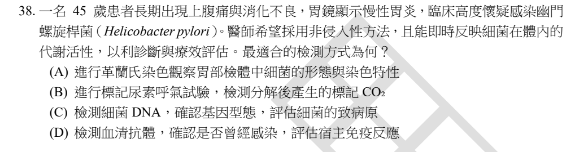
原卷PDF8 · 官方原答案PDF1 · 已核對生物釋疑PDF8–9
官方採計：B 原答案：B
未列於已取得的115年度生物釋疑PDF8–9，依同年度原答案採計
主分類：Ch02 The Chemical Context of Life
2.2 / Isotopes
目錄行110；條目起始印刷頁31；實際目錄 PDF35
主分類理由：關鍵是以標記尿素追蹤其碳進入呼出CO2，主列Isotopes及其代謝示蹤應用。
次分類理由：胃炎與細菌名稱是檢測情境；不把胃部構造或DNA檢測列主分類。
科學說明：B；H. pylori urease分解標記尿素後產生可在呼氣測得的標記CO2。可用穩定13C或放射14C；不可泛稱此檢驗必為放射性。
來源涵蓋範圍：Campbell提供分類與核心框架；具名分子、應用細節或措辭校正另由列示來源補足。
教材正文：印刷31／PDF80、印刷32／PDF81
補充來源：S14
另行比較：胃消化41或一律放射性診斷
標記碳的代謝去向為判別機制，2.2同位素主；S14有13C與14C原始試驗，標記不等於放射性，B相符。
結論：證據確認，分類疑義已解決。完整覆核紀錄
Q39 · 17.5 / Types of Small-Scale Mutations 正式分類
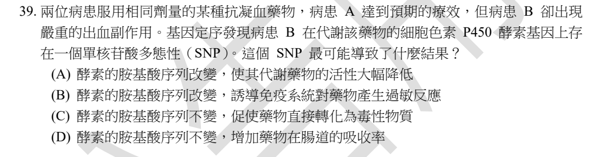
原卷PDF8 · 官方原答案PDF1 · 已核對生物釋疑PDF8–9
官方採計：A 原答案：A
未列於已取得的115年度生物釋疑PDF8–9，依同年度原答案採計
主分類：Ch17 Gene Expression: From Gene to Protein
17.5 / Types of Small-Scale Mutations
目錄行1085；條目起始印刷頁357；實際目錄 PDF39
次分類：Ch20 DNA Tools and Biotechnology
20.4 / Medical Applications
目錄行1274；條目起始印刷頁433；實際目錄 PDF40
主分類理由：SNP改變胺基酸並降低酵素功能，主列Types of Small-Scale Mutations。
次分類理由：20.4 Medical Applications涵蓋個體基因差異與醫學應用，補充藥物反應差異情境。
科學說明：A；本題最適合的是改變胺基酸造成代謝能力降低；不是所有SNP都一定改變胺基酸，結論限於此題四選項。
來源涵蓋範圍：Campbell正文直接支援主要判別原理；題文及官方釋疑差異仍逐題保留。
教材正文：印刷357／PDF406、印刷358／PDF407、印刷433／PDF482、印刷434／PDF483
補充來源：不需另加課本外具名機制來源
另行比較：所有SNP必為非同義
17.5小規模突變支持此題A，結論限於選項；20.4醫學應用保留藥物反應背景，未泛化所有SNP。
結論：證據確認，分類疑義已解決。完整覆核紀錄
Q40 · 18.3 / Effects on mRNAs by MicroRNAs and Small Interfering RNAs 正式分類
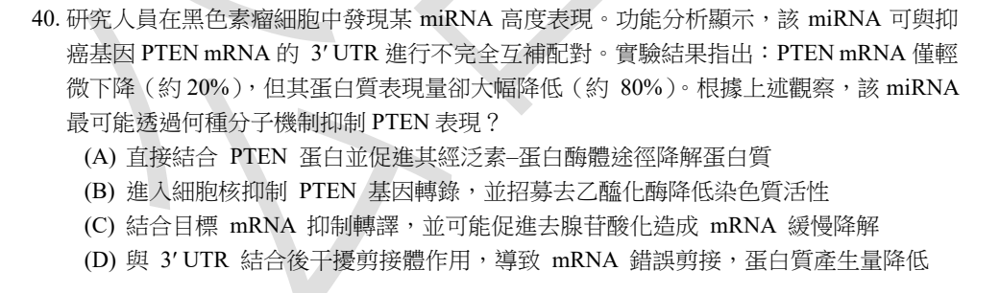
原卷PDF8 · 官方原答案PDF1 · 已核對生物釋疑PDF8–9
官方採計：C 原答案：C
未列於已取得的115年度生物釋疑PDF8–9，依同年度原答案採計
主分類：Ch18 Regulation of Gene Expression
18.3 / Effects on mRNAs by MicroRNAs and Small Interfering RNAs
目錄行1136；條目起始印刷頁379；實際目錄 PDF39
主分類理由：miRNA配對目標mRNA抑制轉譯及促進降解，精確對應Effects on mRNAs by MicroRNAs and Small Interfering RNAs。
次分類理由：不把PTEN癌症背景或3′UTR誤列為DNA轉錄、剪接主分類。
科學說明：C；蛋白下降遠大於mRNA下降支持以轉譯抑制為主，亦可伴隨mRNA去腺苷酸化及降解。
來源涵蓋範圍：Campbell正文直接支援主要判別原理；題文及官方釋疑差異仍逐題保留。
教材正文：印刷379／PDF428、印刷380／PDF429
補充來源：不需另加課本外具名機制來源
另行比較：DNA轉錄抑制或剪接
miRNA配3′UTR，蛋白下降大於mRNA，18.3 miRNA/siRNA對mRNA效應最直接，C相符。
結論：證據確認，分類疑義已解決。完整覆核紀錄
Q41 · 54.2 / Species Diversity 正式分類
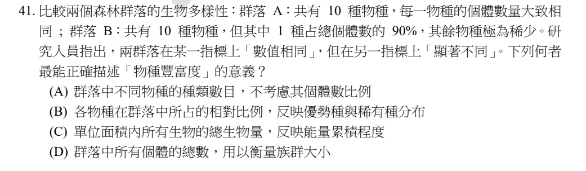
原卷PDF8 · 官方原答案PDF1 · 已核對生物釋疑PDF8–9
官方採計：A 原答案：A
未列於已取得的115年度生物釋疑PDF8–9，依同年度原答案採計
主分類：Ch54 Community Ecology
54.2 / Species Diversity
目錄行3611；條目起始印刷頁1222；實際目錄 PDF50
主分類理由：物種豐富度與相對豐度的區別直接位於Species Diversity。
次分類理由：物種數屬群落層次，不是族群密度或總生物量。
科學說明：A；兩群落均10種故豐富度相同，但均勻度不同。
來源涵蓋範圍：Campbell正文直接支援主要判別原理；題文及官方釋疑差異仍逐題保留。
教材正文：印刷1222／PDF1271、印刷1223／PDF1272
補充來源：不需另加課本外具名機制來源
另行比較：均勻度或生物量
兩群落均10種，豐富度相同；54.2 Species Diversity涵蓋豐富度與相對豐度，A相符。
結論：證據確認，分類疑義已解決。完整覆核紀錄
Q42 · 55.2 / Primary Production in Aquatic Ecosystems 正式分類
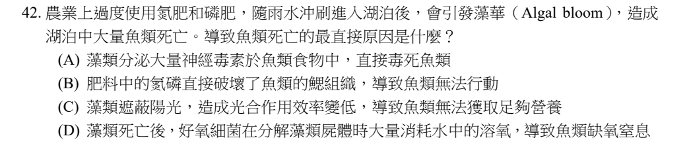
原卷PDF9 · 官方原答案PDF1 · 已核對生物釋疑PDF8–9
官方採計：D 原答案：D
未列於已取得的115年度生物釋疑PDF8–9，依同年度原答案採計
主分類：Ch55 Ecosystems and Restoration Ecology
55.2 / Primary Production in Aquatic Ecosystems
目錄行3689；條目起始印刷頁1242；實際目錄 PDF50
主分類理由：營養鹽增加造成優養化，藻類死亡後分解耗氧的機制直接位於Primary Production in Aquatic Ecosystems。
次分類理由：不將毒素、魚鰓損害或陸域肥料利用當主因，亦不重複計分解一般章。
科學說明：D；分解者耗用溶氧引起魚類缺氧，不是單純藻類遮光或必然產毒。
來源涵蓋範圍：Campbell正文直接支援主要判別原理；題文及官方釋疑差異仍逐題保留。
教材正文：印刷1242／PDF1291、印刷1243／PDF1292
補充來源：不需另加課本外具名機制來源
Q43 · 51.2 / Learning 正式分類
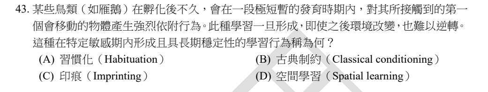
原卷PDF9 · 官方原答案PDF1 · 已核對生物釋疑PDF8–9
官方採計：C 原答案：C
未列於已取得的115年度生物釋疑PDF8–9，依同年度原答案採計
主分類：Ch51 Animal Behavior
51.2 / Learning
目錄行3424；條目起始印刷頁1144；實際目錄 PDF48、PDF49
主分類理由：敏感期形成、長期穩定的imprinting屬Learning下的具體類型。
次分類理由：不可自造Imprinting為目錄條目，也不因敏感期而歸為胚胎發育。
科學說明：C；早期印痕學習具敏感期與持久效果。
來源涵蓋範圍：Campbell正文直接支援主要判別原理；題文及官方釋疑差異仍逐題保留。
教材正文：印刷1144／PDF1193、印刷1145／PDF1194
補充來源：不需另加課本外具名機制來源
另行比較：自造Imprinting目錄或胚胎發育
目錄51.2最小項為Learning，正文含印痕及敏感期，C可正式定位而不用自造節點。
結論：證據確認，分類疑義已解決。完整覆核紀錄
Q44 · 43.4 / Exaggerated, Self-Directed, and Diminished Immune Responses 正式分類
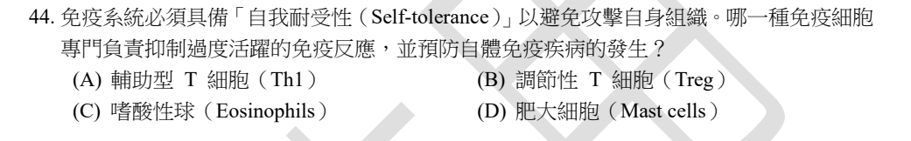
原卷PDF9 · 官方原答案PDF1 · 已核對生物釋疑PDF8–9
官方採計：B 原答案：B
未列於已取得的115年度生物釋疑PDF8–9，依同年度原答案採計
主分類：Ch43 The Immune System
43.4 / Exaggerated, Self-Directed, and Diminished Immune Responses
目錄行2924；條目起始印刷頁970；實際目錄 PDF47
主分類理由：教材在Exaggerated, Self-Directed, and Diminished Immune Responses下明述Tregs調節免疫並避免自身抗原反應。
次分類理由：不以43.2的中樞刪除機制代替此題周邊Treg功能。
科學說明：B；調節性T細胞抑制過強免疫並維持自我耐受。
來源涵蓋範圍：Campbell正文直接支援主要判別原理；題文及官方釋疑差異仍逐題保留。
教材正文：印刷970／PDF1019、印刷971／PDF1020
補充來源：不需另加課本外具名機制來源
另行比較：43.2刪除自體反應淋巴球
實看p971 Treg抑制自身抗原反應；43.4真實條目較中樞刪除機制貼題，B相符。
結論：證據確認，分類疑義已解決。完整覆核紀錄
Q45 · 10.5 / C4 Plants 正式分類
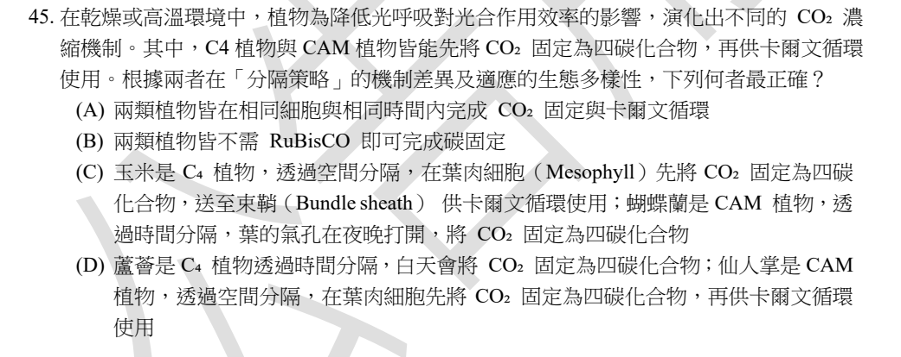
原卷PDF9 · 官方原答案PDF1 · 釋疑PDF8、釋疑PDF9
官方採計：C 原答案：C
維持C
主分類：Ch10 Photosynthesis
10.5 / C4 Plants
目錄行676；條目起始印刷頁203；實際目錄 PDF37
次分類：Ch10 Photosynthesis
10.5 / CAM Plants
目錄行679；條目起始印刷頁205；實際目錄 PDF37
主分類理由：C4 Plants實際條目涵蓋葉肉與束鞘的空間分隔。
次分類理由：CAM Plants是同章另一真實最小條目，補足夜間固定／白天Calvin的時間分隔；章級統計去重。
科學說明：C；官方釋疑第8–9頁維持C。PEP carboxylase確可完成初級固定；持續整體同化仍需Calvin/Rubisco，將此語義界線明載。
來源涵蓋範圍：Campbell正文直接支援主要判別原理；題文及官方釋疑差異仍逐題保留。
教材正文：印刷203／PDF252、印刷204／PDF253、印刷205／PDF254、印刷206／PDF255
補充來源：不需另加課本外具名機制來源
另行比較：10.4或用初級固定否定官方答案
實看目錄為10.5 C4與CAM兩條目；官方第8–9頁維持C。初級固定與整體同化分開說明，章去重但兩條目保留。
結論：證據確認，分類疑義已解決。完整覆核紀錄
Q46 · 36.3 / Bulk Flow Transport via the Xylem 正式分類
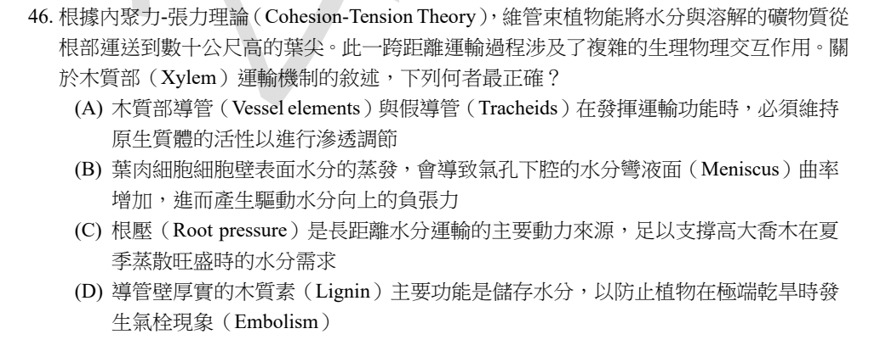
原卷PDF9 · 官方原答案PDF1 · 已核對生物釋疑PDF8–9
官方採計：B 原答案：B
未列於已取得的115年度生物釋疑PDF8–9，依同年度原答案採計
主分類：Ch36 Resource Acquisition and Transport in Vascular Plants
36.3 / Bulk Flow Transport via the Xylem
目錄行2381；條目起始印刷頁792；實際目錄 PDF45
主分類理由：蒸散在細胞壁彎液面產生負壓並由內聚力傳遞，屬Bulk Flow Transport via the Xylem。
次分類理由：根壓及木質部構造是比較用條件，不替代內聚力—張力主機制。
科學說明：B；水分蒸發使彎液面曲率增大、壓力更負而拉動水柱。張力為拉力，原題負張力以負壓理解。
來源涵蓋範圍：Campbell正文直接支援主要判別原理；題文及官方釋疑差異仍逐題保留。
教材正文：印刷792／PDF841、印刷793／PDF842、印刷794／PDF843、印刷795／PDF844、印刷796／PDF845
補充來源：不需另加課本外具名機制來源
Q47 · 39.2 / A Survey of Plant Hormones 正式分類
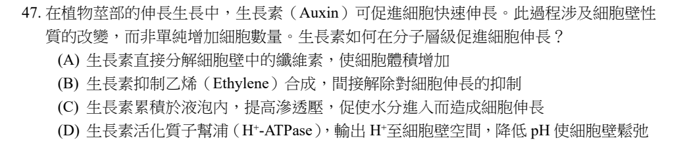
原卷PDF10 · 官方原答案PDF1 · 已核對生物釋疑PDF8–9
官方採計：D 原答案：D
未列於已取得的115年度生物釋疑PDF8–9，依同年度原答案採計
主分類：Ch39 Plant Responses to Internal and External Signals
39.2 / A Survey of Plant Hormones
目錄行2557；條目起始印刷頁847；實際目錄 PDF45
主分類理由：Auxin酸生長作用位於A Survey of Plant Hormones，正文含H+泵與expansin鬆弛細胞壁。
次分類理由：不另列一般膜泵章；題目要求植物生長素引發細胞伸長的完整路徑。
科學說明：D；生長素促進質子外排、細胞壁酸化，活化壁鬆弛機制，並非直接水解纖維素。
來源涵蓋範圍：Campbell正文直接支援主要判別原理；題文及官方釋疑差異仍逐題保留。
教材正文：印刷847／PDF896、印刷848／PDF897、印刷849／PDF898
補充來源：不需另加課本外具名機制來源
Q48 · 9.5 / Types of Fermentation 正式分類
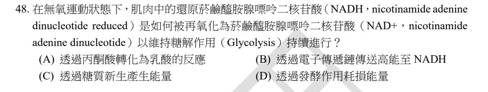
原卷PDF10 · 官方原答案PDF1 · 已核對生物釋疑PDF8–9
官方採計：A 原答案：A
未列於已取得的115年度生物釋疑PDF8–9，依同年度原答案採計
主分類：Ch09 Cellular Respiration and Fermentation
9.5 / Types of Fermentation
目錄行595；條目起始印刷頁180；實際目錄 PDF37
主分類理由：乳酸發酵以pyruvate作受體再生NAD+，對應Types of Fermentation。
次分類理由：不將NADH氧化直接誤列有氧電子傳遞鏈。
科學說明：A；pyruvate接受NADH電子成lactate，NAD+再生使糖解可持續。
來源涵蓋範圍：Campbell正文直接支援主要判別原理；題文及官方釋疑差異仍逐題保留。
教材正文：印刷180／PDF229、印刷181／PDF230
補充來源：不需另加課本外具名機制來源
Q49 · 3.3 / Acidification: A Threat to Our Oceans 正式分類
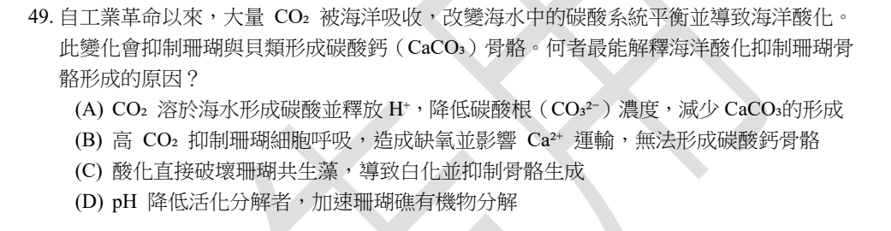
原卷PDF10 · 官方原答案PDF1 · 已核對生物釋疑PDF8–9
官方採計：A 原答案：A
未列於已取得的115年度生物釋疑PDF8–9，依同年度原答案採計
主分類：Ch03 Water and Life
3.3 / Acidification: A Threat to Our Oceans
目錄行184；條目起始印刷頁53；實際目錄 PDF35
主分類理由：碳酸平衡與碳酸根下降的機制直接位於3.3 Acidification: A Threat to Our Oceans。
次分類理由：氣候變遷是來源情境，不以保育章取代精確酸鹼機制。
科學說明：A；增加的H+使carbonate轉為bicarbonate，降低可供CaCO3形成的CO3²−。
來源涵蓋範圍：Campbell正文直接支援主要判別原理；題文及官方釋疑差異仍逐題保留。
教材正文：印刷53／PDF102、印刷54／PDF103
補充來源：不需另加課本外具名機制來源
Q50 · 27.3 / Metabolic Cooperation 正式分類
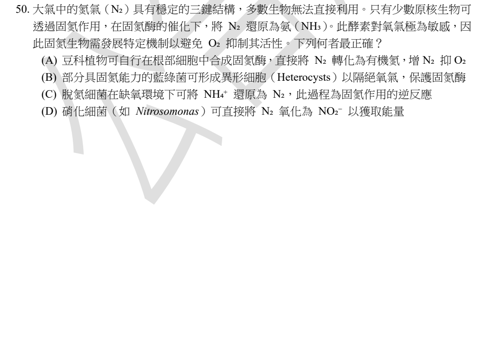
原卷PDF10 · 官方原答案PDF1 · 已核對生物釋疑PDF8–9
官方採計：B 原答案：B
未列於已取得的115年度生物釋疑PDF8–9，依同年度原答案採計
主分類：Ch27 Bacteria and Archaea
27.3 / Metabolic Cooperation
目錄行1741；條目起始印刷頁582；實際目錄 PDF42
次分類：Ch27 Bacteria and Archaea
27.3 / Nitrogen Metabolism
目錄行1738；條目起始印刷頁582；實際目錄 PDF42
主分類理由：題目重點為異形細胞保護固氮酶的細胞分工，最精確為Metabolic Cooperation。
次分類理由：同概念Nitrogen Metabolism補充N2還原成NH3及固氮定義；章級統計去重。
科學說明：B；部分藍綠菌以異形細胞限制O2進入並與鄰近細胞交換代謝物，保護氧敏感的固氮酶。
來源涵蓋範圍：Campbell正文直接支援主要判別原理；題文及官方釋疑差異仍逐題保留。
教材正文：印刷582／PDF631、印刷583／PDF632
補充來源：不需另加課本外具名機制來源
另行比較：一般氮循環55
異形細胞保護固氮酶的分工，以27.3 Metabolic Cooperation較精確；Nitrogen Metabolism為同章次項，B相符。
結論：證據確認，分類疑義已解決。完整覆核紀錄
目前篩選沒有符合的題目；本年度總數仍為50題。
補充來源
查證日期：2026-09-08。使用原始研究摘要及官方資料，不宣稱所有出版商全文已取得。詳細界線見來源紀錄。
- S01 肝臟F2,6BP與糖代謝調控
人類肝細胞升糖素處理的F2,6BP下降，以及F2,6BP活化PFK的原始實驗。
原始來源1 · 原始來源2 - S02 肝臟glucose-6-phosphatase及釋糖
肝G6Pase系統位於ER，支援游離葡萄糖生成；不泛稱肌肉所有同功型皆不存在。
原始來源1 · 原始來源2 - S03 HumanCyc gluconeogenesis pathway
官方途徑資料提供pyruvate羧化成OAA及指定malate輸出路線，不宣稱所有糖質新生必經malate。
原始來源1 - S04 Acetylation of prostaglandin synthase by aspirin (1975)
原始酵素實驗支持aspirin乙醯化抑制前列腺素合成酵素的cyclooxygenase活性。
原始來源1 - S05 A small heat shock protein cooperates with heat shock protein 70 systems (2000)
熱變性luciferase實驗示範熱休克伴侶系統協助復性，補足課本折疊框架。
原始來源1 - S06 Exosome-mediated transfer of mRNAs and microRNAs (2007)
原始研究顯示外泌體RNA可轉移到其他細胞並發揮功能。
原始來源1 - S07 Piezo1 and Piezo2 mechanically activated cation channels (2010)
原始通道研究支持Piezo1及2的機械活化性；諾貝爾官方科學背景區分Piezo2典型觸覺與本體感覺角色。
原始來源1 · 原始來源2 - S08 Modified nucleosides in mRNA: Kariko et al. 2005 and 2008
原始研究顯示核苷修飾降低RNA的先天辨識，並提高轉譯及生物穩定性。
原始來源1 · 原始來源2 - S09 Principles of activation and permeation in an anion-selective Cys-loop receptor (2011)
線蟲GluCl結構與作用研究支持ivermectin結合並促進氯通道開啟。
原始來源1 - S10 IUBMB EC 1.11.1.6 catalase
官方酵素資料的總反應為2H2O2 = O2 + 2H2O，是歧化而非只有還原。
原始來源1 - S11 Activation of VEGF gene transcription by HIF-1 (1996)
原始啟動子、結合位突變及轉錄實驗支持HIF調控VEGF。
原始來源1 - S12 AMPK and mTOR regulate autophagy through direct phosphorylation of Ulk1 (2011)
原始研究支持營養狀態經AMPK/mTOR對Ulk1及自噬的不同調控方向。
原始來源1 - S13 The immune responses in CD40-deficient mice (1994)
原始缺陷鼠實驗呈現抗體類別轉換及生發中心受損，支持T/B協同判別。
原始來源1 - S14 13C and 14C urea breath tests: original studies (1987 and 1989)
以標記尿素代謝後呼出CO2偵測幽門螺旋桿菌；13C為穩定同位素。
原始來源1 · 原始來源2 - S15 Anti-PD-1 and anti-PD-L1 antibodies in advanced cancer (2012)
原始臨床研究機制說明支持阻斷PD-1/PD-L1抑制路徑以恢復抗腫瘤免疫；不是Campbell的直接內容。
原始來源1 · 原始來源2